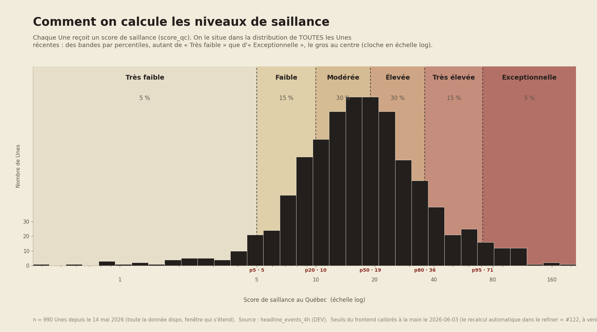

Vitrine Démocratique
Méthodologie
Comment nous mesurons la saillance médiatique et parlementaire dans l'espace public québécois.
§ 01
Cadre conceptuel
La saillance est définie comme la prépondérance relative d'un enjeu, d'un acteur ou d'une institution dans une sphère d'activité publique donnée, à un moment précis. Ce concept s'inscrit dans la tradition de la théorie de l'agenda-setting (McCombs & Shaw, 1972; Iyengar & Kinder, 1987), selon laquelle les médias et les élus se co-influencent mutuellement dans la construction de l'agenda public.
La Vitrine Démocratique mesure deux dimensions complémentaires de la saillance :
- Saillance médiatique : la présence d'un enjeu ou d'un acteur sur les pages frontales des principaux médias québécois et canadiens, pondérée par la durée passée en Une et par le rythme de renouvellement propre à chaque média (§ 03). La position verticale et le gabarit visuel des manchettes sont enregistrés à la capture (§ 02) mais n'entrent pas, à ce jour, dans le calcul de l'indice.
- Saillance parlementaire : la part du discours législatif (débats à l'Assemblée nationale du Québec) consacrée à un enjeu ou à un parti politique.
Ces deux mesures sont indépendantes et ne sont pas agrégées en un indice composite. Leur rapprochement sur une même interface vise à offrir une vue croisée de l'espace public québécois, sans présumer d'une hiérarchie entre ces sphères.
§ 02
Architecture de collecte : Médias
Capture continue des pages frontales
Le système Radar+, développé et opéré par l'équipe Ellipse Sciences du Centre d'analyse des politiques publiques (CAPP), effectue une capture automatique des pages d'accueil de 13 sources d'information toutes les dix minutes environ, de manière ininterrompue depuis septembre 2018. Pour chaque capture sont enregistrés : la structure HTML de la page, la position verticale et le gabarit visuel de chaque manchette, ainsi que le moment précis de l'extraction (horodatage UTC).
| Code | Source | Langue | Temps moyen en Une (min) |
|---|---|---|---|
| JDM | Journal de Montréal | Français | 143 |
| LAP | La Presse | Français | 121 |
| LED | Le Devoir | Français | 242 |
| RCI | Radio-Canada Info | Français | 160 |
| TVA | TVA Nouvelles | Français | 125 |
| MG | Montreal Gazette | Anglais | 241 |
| CBC | CBC News | Anglais | 159 |
| CTV | CTV News | Anglais | 228 |
| GAM | Globe & Mail | Anglais | 326 |
| GN | Global News | Anglais | 375 |
| NP | National Post | Anglais | 249 |
| TTS | Toronto Star | Anglais | 221 |
| VS | Vancouver Sun | Anglais | 505 |
Le temps moyen en Une est calculé sur trois mois glissants et sert à pondérer l'indice de saillance inter-médias (§ 03).
TVA Nouvelles et le Journal de Montréal appartiennent au même groupe de presse (Québecor) et publient parfois la même manchette à l'identique. Pour ne pas compter deux fois une même décision éditoriale, une manchette syndiquée — le même titre publié par les deux sources dans le même bloc de quatre heures (l'unité temporelle de l'analyse, § 03) — n'est comptée qu'une seule fois dans les mesures de saillance; les manchettes propres à chaque source comptent normalement.
Collecte des articles
En parallèle des captures de pages frontales, le système extrait le contenu textuel (titre, corps, auteur·e, source) des articles publiés par ces mêmes médias. Ces articles alimentent les modules de couverture par enjeux et par partis politiques.
Extraction des entités nommées
Les objets présents dans les manchettes (personnes, enjeux, institutions, lieux) sont identifiés par deux modèles d'intelligence artificielle :
- GLiNER : modèle de reconnaissance d'entités nommées (NER) appliqué directement au texte des manchettes.
- Gemma 3 : grand modèle de langage (LLM) utilisé pour normaliser les entités en français et en anglais (ex. : « Trudeau » et « Justin Trudeau » renvoient au même objet).
La performance des modèles est évaluée régulièrement par comparaison à environ 1 500 phrases annotées manuellement.
§ 03
L'indice de saillance
La saillance est mesurée en blocs de quatre heures ancrés sur l'heure de Montréal (03–07 h, 07–11 h, 11–15 h, 15–19 h, 19–23 h, 23–03 h), qui constituent l'unité temporelle de base de l'analyse. L'ancrage sur l'heure locale plutôt que sur UTC garantit qu'un bloc reste la même tranche de journée toute l'année, y compris aux changements d'heure.
Trois façons d'occuper l'espace médiatique
Une nouvelle peut s'imposer de trois manières différentes, et l'indice les mesure séparément avant de les combiner. Chacune est ramenée sur une échelle de 0 à 1.
| Facette | Question | Mesure |
|---|---|---|
| Visibilité | Combien de médias en ont fait leur Une? | Part des médias suivis de la région qui ont mis l'histoire en Une, en plus du premier. |
| Intensité | Chaque média y consacre-t-il un article ou plusieurs? | Nombre moyen d'articles par média couvrant l'histoire. Un même média ne compte que jusqu'à trois articles : au-delà, un site qui décline abondamment un sujet gonflerait la mesure sans que l'histoire occupe plus de place ailleurs. |
| Durée | Combien de temps est-elle restée en Une? | Temps passé en Une, rapporté au rythme habituel de chaque média : une heure sur une page frontale renouvelée en continu ne vaut pas une heure sur une page qui change deux fois par jour. |
Comment les trois se combinent
Les trois facettes sont réunies par une moyenne géométrique, et non par une addition. La différence est de fond : une addition serait compensatoire, c'est-à-dire qu'une facette très forte pourrait masquer une facette absente. Un seul média qui laisserait un sujet toute la journée en Une obtiendrait alors un score élevé, alors qu'aucun autre média ne l'a jugé digne de sa page frontale. La moyenne géométrique refuse cette compensation : une histoire doit exister sur les trois plans à la fois pour monter, et le plus faible des trois tire l'ensemble vers le bas. Un plancher empêche toutefois qu'une facette nulle annule tout le reste.
L'indice est calculé séparément pour chaque région — les médias québécois d'un côté, les médias canadiens de l'autre — parce qu'une histoire ne se compare qu'aux Unes du même ensemble de médias. C'est ce qui permet au module « Deux solitudes ? » de situer chaque camp chez lui plutôt que dans un panier commun.
Le résultat vaut entre 0 et 1 ; il est affiché sur 100, avec une décimale.
Niveaux de saillance affichés
Toutes les nouvelles présentées dans le module « La Une des Unes » ont fait la Une d'au moins un média : elles sont déjà saillantes. L'étiquette de saillance ne dit donc pas si une nouvelle est importante, mais où elle se situe parmi les autres Unes. Ce qui est classé est l'attention cumulée sur 24 heures, les heures récentes comptant davantage — la même grandeur qui détermine l'ordre des manchettes, de sorte que le niveau affiché et le rang racontent la même chose. Cette valeur est comparée à la distribution des mêmes cumuls sur toutes les Unes récentes, puis classée en six niveaux par percentiles symétriques.
| Niveau | Position (percentile de l'attention cumulée 24 h) | Part des Unes |
|---|---|---|
| Très faible | sous le 5e percentile | 5 % |
| Faible | du 5e au 20e percentile | 15 % |
| Modérée | du 20e au 50e percentile | 30 % |
| Élevée | du 50e au 80e percentile | 30 % |
| Très élevée | du 80e au 95e percentile | 15 % |
| Exceptionnelle | au-dessus du 95e percentile | 5 % |
Les bandes sont symétriques : autant de « Très faible » que d'« Exceptionnelle », l'essentiel au centre. La médiane tombe entre « Modérée » et « Élevée », de sorte qu'aucune bande ne représente « la moyenne ». Les seuils sont recalculés à chaque mise à jour sur l'historique récent disponible, de sorte qu'« habituel » suit l'évolution réelle de l'actualité plutôt qu'une saison figée ; à défaut, on retombe sur des seuils de référence fixes. Lorsque la façon de mesurer la saillance change, cet historique de référence repart de ce changement.
Une propriété mérite d'être signalée, parce qu'elle ne vient d'aucune règle ajoutée : une histoire portée par un seul média ne peut pas franchir la moitié supérieure de l'échelle, quelle que soit la durée pendant laquelle ce média l'a gardée en Une. Elle découle directement de la façon dont l'indice est construit — la facette Visibilité y est presque nulle, et comme les trois facettes se multiplient au lieu de s'additionner, aucune des deux autres ne peut compenser. C'est la traduction mathématique d'un principe simple : la saillance décrit une attention collective, et un média seul, aussi insistant soit-il, ne fait pas un agenda.

§ 04
Module : Les Unes saillantes du moment & Deux solitudes?
Ce module identifie les événements qui dominent l'agenda médiatique québécois au moment de la consultation, en distinguant l'importance relative accordée par les médias francophones québécois et les médias canadiens anglophones.
Source des données
Le système regroupe les articles qui traitent d'un même fait d'actualité, à partir des captures des pages d'accueil des médias et des articles qui y figurent. Chaque regroupement, appelé « événement », reçoit un enjeu principal et un score de saillance (son importance médiatique), mesuré à la fois à l'échelle de l'ensemble des médias suivis et spécifiquement pour les médias québécois.
Ce regroupement est fait par un modèle de langue, à qui l'on soumet, toutes les quatre heures, les articles passés en Une pendant la période ainsi que la liste des histoires déjà suivies depuis 24 heures. Il répond à deux questions d'un seul tenant : quels articles forment une même histoire, et laquelle poursuit une histoire de la veille. La consigne définit une histoire comme un dossier d'actualité : l'annonce et la réaction politique, la gestion d'un événement et ses conséquences, la version française et la version anglaise d'un même fait vont ensemble. Elle précise aussi ce qui ne suffit pas à faire un même dossier — un personnage commun, un thème commun, une région commune — pour éviter que deux affaires distinctes soient présentées comme une seule.
Cette méthode a remplacé un regroupement fondé sur la similarité statistique du vocabulaire, qui découpait une même actualité en plusieurs morceaux : chacun paraissait alors moins important qu'il ne l'était, et les médias qui la couvraient se retrouvaient répartis entre ces morceaux. Sur onze semaines d'archives rejouées, le nouveau regroupement reconnaît la suite d'une histoire dans 64 % des cas contre 40 % auparavant, et le nombre d'histoires portées par au moins trois médias québécois passe de 159 à 218.
Le système suit aussi chaque histoire au fil de la journée. Sur une fenêtre glissante de 24 heures, il rassemble l'ensemble des médias qui l'ont mise en Une, le dernier article mis en Une par chacun d'eux, et le moment où elle est apparue pour la première fois parmi les Unes saillantes.
Algorithme : La Une des Unes
- Les événements des 24 dernières heures sont regroupés par histoire (une seule version par fait d'actualité, en priorisant la lecture québécoise), puis l'attention qu'ils ont reçue est cumulée sur cette fenêtre glissante avec une pondération de récence : l'attention récente compte davantage que l'ancienne, son poids diminuant de moitié toutes les dix heures. Une histoire qui a dominé la veille mais que plus personne ne met en Une cède ainsi sa place, sans que la fenêtre perde le cycle complet d'une journée. Le module et le panneau « Deux solitudes » partent de la même fenêtre et du même regroupement d'histoires : chaque manchette retenue ici figure aussi parmi les axes du radar, qui peut en outre montrer des histoires saillantes seulement du côté canadien.
- Les événements provenant uniquement de médias américains sont écartés du classement, ainsi que de tous les calculs de saillance et de convergence. Ils restent lus à part, pour une seule question, décrite plus bas : le même sujet est-il aussi en Une aux États-Unis?
- Les histoires les plus saillantes au Québec sur ces 24 heures sont retenues et présentées en mise en page éditoriale (jusqu'à trois manchettes : une principale et des secondaires). Les places sont attribuées au classement, sans condition sur le nombre de médias : une histoire portée par un seul média peut donc figurer parmi les manchettes, et son niveau de saillance dit alors honnêtement où elle se situe — l'indice tient compte du nombre de médias, une couverture isolée ne peut pas atteindre les niveaux élevés. Une manchette secondaire n'apparaît toutefois que si elle a retenu au moins la moitié de l'attention de la première : le nombre de manchettes affichées reflète ainsi la journée elle-même. Quand une histoire domine largement, elle reste seule ; quand deux ou trois se tiennent, elles sont toutes montrées, quel que soit leur niveau. La comparaison se fait entre les histoires du moment, jamais contre un seuil fixe — une journée calme affiche donc bien ses trois manchettes, chacune avec son niveau réel. Cette règle ne concerne que l'affichage : l'indice est calculé et conservé pour toutes les histoires. Le niveau affiché situe la nouvelle parmi les manchettes portées par au moins deux médias québécois : c'est le groupe de comparaison, et il ne dépend pas de ce qui est affiché à l'écran. L'ordre des manchettes suit directement cette attention cumulée : une histoire qui a culminé pendant la nuit reste en Une le lendemain matin, puis glisse d'elle-même vers les manchettes secondaires — et finit par sortir — à mesure que de plus grosses histoires émergent. C'est le même classement que celui du panneau « Deux solitudes », de sorte que les deux vues racontent la même actualité. Quand deux histoires très proches sont identifiées comme une seule et même actualité, un seul — le plus saillant — est retenu; cette identification est automatisée et peut occasionnellement laisser passer un doublon. Le module présente donc de une à trois manchettes, selon ce que l'actualité offre réellement.
- Pour chaque histoire, le niveau de saillance affiché (de « Très faible » à « Exceptionnelle ») provient du classement par percentiles décrit au § 03, appliqué à l'attention cumulée sur les 24 dernières heures, les heures récentes comptant davantage — c'est la même grandeur qui détermine l'ordre des manchettes, de sorte que le niveau affiché et le rang racontent la même chose. Ce niveau redescend à mesure qu'une histoire s'éteint : il décrit où elle en est, non ce qu'elle a été à son plus fort. Le niveau affiché est une fonction directe de cette valeur : dès qu'une nouvelle franchit un seuil, elle porte le palier correspondant, à la hausse comme à la baisse. Deux nouvelles de même attention cumulée affichent donc toujours le même niveau — condition nécessaire pour qu'un niveau puisse se comparer d'une période à l'autre. Un mécanisme d'amortissement retardait auparavant les changements de palier ; il a été retiré, parce qu'il faisait dépendre le niveau affiché de l'historique de la nouvelle et non de sa seule valeur. La taille du titre et de l'image suit ce niveau : plus une nouvelle est saillante, plus elle occupe d'espace. Un bouton d'information situe la nouvelle sur la distribution de toutes les Unes de l'année, et y place aussi le sommet qu'elle a atteint, pour montrer à quel point son niveau est courant ou rare et de combien elle en est redescendue.
- À côté du niveau, une petite courbe de tendance retrace la même attention cumulée que le niveau lui-même, édition par édition sur les 24 dernières heures. Hauteur et niveau disent donc toujours la même chose : un point plus haut est un niveau plus élevé, sans exception. Un point creux marque une édition où aucun média québécois n'avait l'histoire en Une — l'attention accumulée reste alors visible et continue de décroître, ce qui explique qu'une nouvelle puisse conserver un niveau élevé alors qu'elle vient de quitter les pages frontales. Le point noir marque le sommet atteint. Une flèche et une mention en résument le mouvement, toujours construites de la même façon : ce que fait l'attention, puis, entre parenthèses, le repère qui la situe. Selon le cas, l'histoire est nouvelle, à un nouveau sommet (avec la hausse depuis l'édition précédente), en recul depuis son sommet (avec l'écart en points de part), elle remonte, elle revient après une absence, elle se maintient, ou l'attention est retombée lorsqu'aucun média ne la porte plus dans le bloc courant. Ce dernier cas est fréquent : le classement portant sur 24 heures, une manchette peut rester affichée alors que les médias sont déjà passés à autre chose. Survoler chaque point révèle le moment, le niveau de saillance d'alors et la part d'attention correspondante.
- La byline « À la Une aujourd'hui sur » liste les médias québécois qui ont mis l'histoire en Une au cours des 24 dernières heures — pas seulement dans le bloc courant; « Absent de la Une sur » désigne ceux qui ne l'ont mise en Une à aucun moment de cette fenêtre. Chaque nom de média pointe vers le dernier article que ce média a mis en Une sur l'histoire.
- Quand la même histoire est aussi en Une ailleurs, une mention le signale juste sous cette byline : « Résonance canadienne » lorsque des médias canadiens anglophones l'ont mise en Une, « Résonance américaine » lorsque ce sont des médias américains. Les deux peuvent apparaître ensemble, et elles ne sont jamais fondues en une seule mention : un sujet québécois repris à Toronto et un sujet repris à New York ne disent pas la même chose. Un bouton d'information donne, pour chacune, la part de l'attention que cette région a consacrée à l'histoire — la même mesure que celle des axes du radar « Deux solitudes » — puis la liste des médias de la région qui l'ont mise en Une, chaque nom pointant vers son article.
- Le regroupement des articles en une même histoire est automatique, et il lui arrive encore d'absorber un article portant sur un autre sujet — ce qui crédite alors un média d'une Une qu'il n'a pas faite. C'est la raison pour laquelle la consigne de regroupement (§ plus haut) énonce explicitement ce qui ne fait pas une même histoire. Une vérification distincte, appliquée article par article après le regroupement, a été essayée puis retirée : mesurée sur onze semaines, elle défaisait plus de regroupements justes qu'elle ne corrigeait d'erreurs, parce qu'elle jugeait chaque article contre le seul titre de la manchette et écartait donc les autres facettes du même dossier. La couverture affichée peut ainsi, dans une minorité de cas, comprendre un média de trop.
Algorithme : Deux solitudes
Ce panneau compare, sur les 24 dernières heures, ce que mettent de l'avant les médias québécois et les médias canadiens (hors Québec). Il mesure dans quelle mesure les deux espaces médiatiques couvrent les mêmes histoires — et non les mêmes articles.
- La mesure de fond est la part d'attention consacrée aux histoires couvertes des deux côtés. Pour chaque région, on rapporte l'attention portée aux histoires que l'autre région suit aussi à son attention totale, puis on fait la moyenne des deux. 0 % = aucune histoire commune; 100 % = les deux régions se concentrent entièrement sur les mêmes histoires. La divergence en est le complément.
- Le grand chiffre affiché est l'écart entre cette part et son niveau habituel (la médiane de la dernière année), avec sa direction : « plus convergent » ou « plus divergent » que d'habitude. L'infobulle ⓘ précise l'intensité : « un peu » quand l'écart reste dans la plage des journées ordinaires, « nettement » quand le moment en sort (plus convergent que 80 % des fenêtres de la dernière année, ou plus divergent que 80 % d'entre elles). Le niveau absolu du moment reste accessible : il s'affiche au survol du marqueur de la jauge et dans l'infobulle ⓘ. Tout le module chiffre une seule et même grandeur, la convergence — la part d'attention consacrée aux mêmes histoires — du grand chiffre à la jauge, en passant par les infobulles et le partage ; les mots « divergent » et « convergent » n'en nomment que les deux sens.
- Au bout de chaque sujet, un repère indique son niveau de saillance, situé parmi les Unes des médias de sa région : un sujet porté surtout par les médias canadiens est comparé aux Unes canadiennes, un sujet porté surtout par les médias québécois aux Unes québécoises. Un même sujet peut donc être « exceptionnel » d'un côté et « élevé » de l'autre — ce n'est pas une contradiction, c'est précisément ce que le module donne à voir. Le survol du sujet lui-même donne la part d'attention de chaque région ; le survol du repère donne le niveau et ce qu'il signifie.
- Chaque axe du radar est une histoire saillante des 24 dernières heures, tirée du même regroupement que la Une des Unes : l'union des histoires les plus suivies au Québec et au Canada (jusqu'à six axes), de sorte que les manchettes de la Une figurent toutes sur le radar. Sa distance au centre est la part d'attention que la région lui a consacrée sur cette fenêtre glissante (avec la même pondération de récence que la Une des Unes), exprimée en pourcentage de toute l'attention de la région (les anneaux du radar en indiquent l'échelle). Comme chaque côté est ramené à sa propre attention totale, les deux formes sont directement comparables malgré le nombre de médias différent.
- Sous le radar, une échelle situe le résultat entre divergence totale (à gauche) et convergence totale (à droite). Elle est graduée de 0 % à 100 % de convergence, dans ce sens : le marqueur se lit donc directement comme la part d'attention consacrée aux mêmes histoires. Le repère « habituel » marque un niveau courant : il se trouve du côté divergent, car entre le Québec et le Canada la divergence est la règle et la convergence l'exception.
Limites et honnêteté
- L'indice mesure les mêmes sujets saillants, pas les mêmes histoires : deux médias peuvent parler de la même personne pour des raisons différentes, ou de la même histoire en la rattachant à des objets différents.
- Environ un dixième des sujets québécois portent du texte français résiduel non apparié côté canadien, ce qui abaisse légèrement la convergence mesurée.
- Les événements sont regroupés à partir des médias québécois, canadiens et américains ensemble; c'est ce qui permet de reconnaître qu'une même histoire est couverte des deux côtés de la frontière. Le radar n'en affiche toutefois que les parts québécoise et canadienne ; la part américaine n'apparaît que dans la mention « Résonance américaine » de la Une des Unes.
- Le rapprochement entre une manchette québécoise et une Une américaine est automatique et repose en partie sur la proximité des titres : une reprise formulée très différemment peut lui échapper. L'absence de mention « Résonance américaine » signifie donc « aucune reprise reconnue », et non « aucune reprise ».
- Le repère « habituel » de la jauge est recalculé automatiquement à chaque mise à jour, sur une fenêtre glissante d'un an, comme les seuils de saillance de la Une des Unes. Il ne dépend donc plus d'une valeur fixée à la main. À défaut de cet historique, une valeur de référence prend le relais.
- Les deux échelles de saillance du radar reposent sur la même mesure : de chaque côté, le niveau d'un sujet est établi sur son intensité cumulée des 24 dernières heures, située dans l'historique d'un an des Unes de sa propre région. Un sujet québécois se compare aux Unes québécoises, un sujet canadien aux Unes canadiennes — et les niveaux des deux côtés se comparent directement entre eux. Si l'historique canadien venait à manquer lors d'une mise à jour, le niveau serait provisoirement établi sur l'intensité de pointe de la fenêtre, comme avant.
- Le chevauchement visuel des deux formes du radar ne mesure pas la convergence : il dépend de la position des sujets autour du cadran, qui suit leur ordre de saillance. Deux régions peuvent suivre les mêmes histoires avec des intensités différentes sans que leurs formes se recouvrent beaucoup. Le score, lui, est calculé sur les parts d'attention consacrées aux histoires communes — pas sur le dessin.
Affichage
Un radar à deux formes superposées (le Québec en bleu, le Canada en rouge) montre d'un coup d'œil qui parle de quoi : chaque forme dessine où sa région porte son attention. Le degré de convergence se lit dans le grand chiffre et la jauge, pas dans le recouvrement des formes (voir « Limites et honnêteté »). Autour, chaque sujet porte les logos des médias qui l'ont couvert, cliquables vers leur dernier article. Sur un écran étroit, où les titres ne tiendraient pas autour du radar, les axes sont numérotés et les sujets se lisent dans une liste sous le radar, avec les mêmes logos. Un grand pourcentage indique l'écart avec le niveau habituel de convergence, et le libellé qui l'accompagne en donne le sens et l'intensité (plus divergent ou plus convergent que d'habitude) ; une bulle d'information en détaille la lecture. Sur l'axe fleur-de-lys/érable, la distance entre les deux symboles encode la convergence : ils se rapprochent quand les deux agendas se recoupent, s'éloignent quand ils divergent. La jauge situe le moment sur l'échelle complète, de la divergence totale à la convergence totale; le survol de son marqueur donne les niveaux absolus du moment et de l'habituel.
§ 05
Module : Couverture médiatique des partis politiques
Ce module mesure la saillance (visibilité dans les médias) et le ton (valence du traitement médiatique) des partis politiques québécois dans la couverture des 13 sources d'information suivies.
Partis provinciaux suivis
| Parti provincial suivi |
|---|
| Coalition avenir Québec (CAQ) |
| Parti québécois (PQ) |
| Parti libéral du Québec (PLQ) |
| Québec solidaire (QS) |
| Parti conservateur du Québec (PCQ) |
Source des données
Le système analyse la couverture médiatique et produit, pour chaque parti, chaque date et chaque bloc de collecte, deux mesures clés : une saillance pondérée (visibilité) et un ton net pondéré (valence du traitement), disponibles sur les fenêtres jour, semaine et mois.
Algorithme
- Les articles sont segmentés en phrases. Un dictionnaire de partis et un dictionnaire de sentiment sont appliqués simultanément à chaque phrase.
- Saillance pondérée : nombre de mentions du parti dans la phrase, divisé par le nombre total de mots, pondéré par l'indice inter-médias du média source.
- Ton net pondéré : nombre de termes positifs moins nombre de termes négatifs, rapporté au total des mots et pondéré de la même façon.
- Agrégation journalière, puis calcul de moyennes glissantes pour les fenêtres semaine et mois.
Affichage
Classement des partis par saillance. Trois onglets permettent de basculer entre les fenêtres aujourd'hui, cette semaine et ce mois. Le ton est visualisé par un indicateur coloré (positif / neutre / négatif) pour chaque parti.
§ 06
Module : De quoi parle-t-on?
Ce module représente la distribution de la couverture médiatique par grand enjeu de société sur la période sélectionnée (aujourd'hui · cette semaine · ce mois).
Enjeux couverts
| Grand enjeu de société |
|---|
| Économie et travail |
| Gouvernements |
| Santé |
| Environnement |
| Droits et libertés |
| Culture |
| Éducation |
| Aff. internationales |
| Loi et crime |
| Terres publiques |
| Immigration |
| Technologie |
Source des données
Le système produit, pour chaque fenêtre temporelle et chaque bloc de collecte (matin, midi, après-midi), un score de couverture pour chacun des 12 grands enjeux.
Algorithme
- Le système analyse le contenu textuel des articles de chaque bloc de quatre heures et calcule un score de saillance pour chacun des 12 enjeux.
- Pour la période choisie, les scores du traitement le plus récent sont additionnés pour chaque enjeu.
- Les scores cumulés déterminent la surface de chaque tuile (plus un enjeu est saillant, plus sa tuile est grande) ainsi que le classement des enjeux, du plus au moins saillant.
- Pour la vue du jour, on calcule aussi la variation de saillance de chaque enjeu par rapport au traitement précédent, exprimée en pourcentage (hausse ou baisse).
- Pour les vues hebdomadaire et mensuelle, le classement des enjeux est conservé à chaque traitement, ce qui permet d'en retracer l'évolution dans le temps.
- Pour chaque enjeu, les actualités récentes sont regroupées. Chaque actualité conserve la liste précise des médias québécois qui la couvrent, plutôt qu'une liste générale calculée pour l'ensemble de l'enjeu.
Affichage
Trois vues, une par fenêtre temporelle, sélectionnables par onglet.
- Aujourd'hui : une grille de tuiles colorées (une couleur par enjeu) dont la surface est proportionnelle à la saillance. Chaque tuile affiche le nom de l'enjeu et la variation de sa saillance par rapport au traitement précédent (une hausse ou une baisse, en pourcentage). Sur ordinateur, le survol révèle l'actualité principale de l'enjeu et les médias qui la couvrent. Un clic agrandit ensuite la tuile à toute la visualisation et affiche toutes les actualités récentes associées, avec les médias propres à chacune. Cette variation indique si un enjeu gagne ou perd en importance d'une mise à jour à l'autre; elle ne compare pas une journée à la précédente.
- Cette semaine et Ce mois : un graphique retrace l'évolution du classement des douze enjeux jour après jour (les sept derniers jours, ou le mois en cours). Sur ordinateur, toutes les trajectoires sont présentées ensemble. Sur mobile, une trajectoire est mise en évidence à la fois; une liste classée permet de choisir l'enjeu suivi, tandis que les onze autres restent visibles en arrière-plan. En sélectionnant un enjeu, on affiche ses actualités récentes, avec un lien vers l'article sur le site du média.
§ 07
Module : L'alignement de l'Assemblée
Ce module mesure la présence des partis politiques dans les débats de l'Assemblée nationale du Québec (ANQ) selon trois fenêtres : la dernière période de questions (last PDQ), la session en cours et la législature complète.
Source des données
Le système traite les transcriptions officielles des débats de l'ANQ. Chaque intervention est découpée en phrases, puis chaque phrase reçoit un ou plusieurs enjeux (même taxonomie qu'au § 06) et une valeur de ton. De là viennent, pour chaque parti et chaque période : le nombre d'interventions, le volume de mots prononcés, la richesse lexicale (diversité du vocabulaire), le ton moyen, la répartition par enjeu, un concept distinctif et un angle éditorial. Les mêmes mesures sont calculées par député, sauf l'angle éditorial, qui reste au niveau du parti.
Les segments vides ou sans aucune lettre, produits par le découpage automatique, sont écartés avant toute analyse. Les passages de pure procédure (« je cède la parole à… », les préambules de motion, les formules d'ouverture de séance) sont retirés du corpus servant au concept distinctif et à l'angle éditorial : ils sont très caractéristiques du rôle de qui préside ou lit une motion, pas de son propos politique.
Le nom affiché d'un député provient de l'Assemblée nationale, qui en conserve la graphie officielle, et non du référentiel d'appariement, qui stocke les noms sans accents ni traits d'union. Deux élus homonymes restent deux entrées distinctes, départagées par leur circonscription.
Le module ne couvre que les cinq partis reconnus. Les député.es qui siègent comme indépendant.es en sont absent.es : leurs interventions sont écartées avant agrégation, et aucune carte ne leur est consacrée. Neuf sièges étaient dans cette situation au 5 août 2026. Les totaux affichés par parti ne décrivent donc pas l'ensemble de la chambre.
Les nouvelles séances sont traitées chaque mardi. Lorsque l'Assemblée ne siège pas (relâche estivale ou parlementaire), les chiffres affichés restent ceux de la dernière séance connue.
Répartition par enjeu
Une phrase peut porter plusieurs enjeux à la fois : un propos sur le financement des hôpitaux compte à la fois en santé et en économie. La répartition affichée rapporte donc le nombre d'attributions d'un enjeu au total des attributions de la période, de sorte que les douze parts forment un ensemble de 100 %. Elle se lit comme la part de l'attention thématique, pas comme la part des phrases prononcées.
Cette répartition porte sur les phrases auxquelles au moins un enjeu a été attribué. Une part appréciable du discours parlementaire n'en reçoit aucun : environ 56 % des phrases au 30 juillet 2026, l'essentiel étant des interventions courtes, procédurales ou trop peu explicites pour être classées. La répartition décrit donc ce dont il a été question quand un sujet identifiable était abordé, et non l'intégralité de ce qui a été dit en chambre.
Concept distinctif
Le concept distinctif est l'expression, d'un ou deux mots, qui sépare le plus un parti (ou un député) des autres sur la période. Le calcul établit d'abord une liste de candidats en combinant trois signaux : la fréquence de l'expression chez cette personne ou ce parti, le fait qu'une seule d'entre elles l'emploie, et sa rareté dans l'ensemble du corpus. Ce dernier signal est ce qui distingue un mot d'usage courant en chambre d'un terme employé de façon insistante par une seule voix.
Les candidats sont extraits phrase par phrase, ce qui évite d'assembler des expressions à cheval sur deux phrases. Sont exclus les mots outils français et anglais, le vocabulaire de procédure parlementaire, ainsi que les noms des élus et les noms et sigles de partis : un député n'est pas caractérisé par son propre nom, ni un parti d'opposition par le sigle de celui qu'il critique. Quand une expression de deux mots porte une part substantielle des emplois du mot seul, c'est elle qui est retenue.
Un modèle de langage tranche ensuite entre les soixante meilleurs candidats. Il ne rédige rien : il reçoit la liste calculée et en désigne une seule entrée, celle qui décrit un enjeu de politique publique plutôt que le fonctionnement de la chambre. Sa réponse est vérifiée contre la liste, si bien qu'aucune expression absente du corpus ne peut être publiée. Cette étape existe parce que la statistique seule ne fait pas la différence entre le vocabulaire des travaux parlementaires et celui des politiques débattues : la fréquence, la rareté et la répartition entre élus classent « salle » ou « affaires courantes » aussi haut que « logement abordable ». Quand aucun candidat ne décrit un enjeu substantiel, aucun concept n'est affiché pour cette entité.
Ton en chambre
Chaque phrase reçoit un ton favorable, défavorable ou neutre, pondéré par la confiance du classement. Le ton d'un parti est la moyenne de ces valeurs, calculée sur les seules phrases porteuses d'un enjeu. Les formules d'ouverture, les remerciements et les civilités de séance en sont écartés : le classificateur les juge favorables, et comme elles représentent une large part des interventions, elles tiraient la mesure vers le haut au point d'afficher des partis d'opposition au ton favorable.
Le ton mesuré reste resserré autour de zéro, si bien qu'une valeur brute ne dirait pas grand-chose. L'échelle affichée place donc un repère sur une règle calée sur l'étendue réellement observée pendant la période : la voix la plus défavorable en occupe la gauche, la plus favorable la droite, et le point neutre reste au centre. Une position se lit par comparaison avec les autres élus de la même période, jamais comme une note absolue. Le sens du ton est la partie fiable de cette mesure ; son intensité l'est beaucoup moins.
Angle éditorial
L'angle éditorial est la seule phrase du module rédigée par un modèle de langage. Il résume ce sur quoi un parti a insisté pendant la période. Le modèle ne reçoit ni statistiques seules ni extraits tirés au hasard : il lit les interventions les plus centrées sur l'enjeu dominant du parti, sur toute la fenêtre de la période, retenues selon leur degré de concentration sur cet enjeu et leur substance, avec un plafond par élu pour qu'une seule voix ne fournisse pas toute la matière.
Deux garde-fous encadrent la rédaction. Le modèle ne peut jamais attribuer à un parti la paternité d'une mesure ou d'un projet de loi : en débattre, même longuement, n'est pas la proposer, et l'angle décrit ce que le parti défend, dénonce ou réclame. Le modèle doit ensuite fournir une citation recopiée des extraits qu'il a lus, et le système vérifie que cette citation figure bien dans les propos de ce parti. Si la vérification échoue, aucun angle n'est publié pour cette période : un espace vide vaut mieux qu'une affirmation invérifiable.
Fenêtres temporelles
L'onglet « dernière période de questions » couvre la dernière séance connue, « cette session » la session parlementaire en cours. L'onglet « cette législature » remonte à la première séance présente dans nos données, qui n'est pas nécessairement la première séance de la législature : la profondeur de l'historique dépend de la date de mise en service de la collecte.
Affichage
Le module se présente comme un vestiaire : un casier par parti actif, alignés côte à côte. Les battants de chaque casier portent le bilan du parti : volume de mots, nombre de député.es ayant pris la parole et position du parti sur l'échelle de ton. Cliquer un casier écarte ses battants et déroule, sous la rangée, un tiroir relié au casier ouvert. L'intérieur du casier montre alors ce que les portes cachaient : le nombre d'interventions, les trois principaux sujets abordés et l'élu qui a le plus parlé. Le tiroir porte l'angle éditorial du parti et le présentoir de ses cartes.
Chaque député ayant pris la parole a sa carte, au format d'une carte de collection (63,5 × 88,9 mm). Le recto porte son portrait, son nom, sa circonscription, le sigle de son parti et son enjeu dominant. La retourner d'un clic révèle le verso statistique : volume de mots, nombre d'interventions, richesse lexicale, ton en chambre, répartition par enjeu, concept distinctif et un extrait qui l'illustre.
Les portraits proviennent du site de l'Assemblée nationale du Québec, qui en autorise la reproduction pour un usage non commercial à condition d'en indiquer la source. Ils sont retraités en bichromie pour s'accorder à la mise en page. Ce retraitement est calculé image par image, de façon à ce que le rendu d'un visage ne dépende pas de sa carnation.
Trois onglets permettent de basculer entre la dernière période de questions, la session en cours et la législature. Les partis sans siège à la législature courante sont affichés à part, sous l'intitulé « Hors chambre ». Un jeu de billard caché propose une seconde façon d'explorer les données de parti : chaque parti y est une bille qu'on peut envoyer vers l'une de six poches, chacune révélant une facette différente de sa présence.
§ 08
Module : Polimètre+ : promesses électorales à la une
Ce module suit la couverture médiatique des promesses électorales de la Coalition avenir Québec (CAQ) : il identifie chaque jour, sur une semaine glissante, les promesses les plus saillantes (les plus présentes dans l'actualité) et celles en plus forte progression par rapport à la semaine précédente.
Source des données
Le module croise la couverture médiatique avec la liste officielle des promesses de la CAQ. L'appariement entre un article et une promesse repose entièrement sur des expressions régulières validées manuellement : c'est la source de vérité de l'identification.
Algorithme
- Identification (règles) : chaque titre et texte d'article est confronté à un jeu d'expressions régulières validées, une par promesse, pour déterminer quelles promesses y sont mentionnées.
- Indice de saillance : pour chaque promesse, nombre d'articles la mentionnant multiplié par le temps de présence en Une pondéré entre médias (même pondération inter-médias que l'indice de saillance décrit au § 03).
- Progression hebdomadaire : écart entre l'indice de saillance de la semaine courante et celui de la semaine précédente, permettant de repérer les promesses dont la couverture s'intensifie.
- Les promesses sont classées par saillance et par progression pour la semaine se terminant à la date du traitement.
Enrichissement génératif (optionnel)
En complément, et sans jamais intervenir dans l'identification (qui demeure entièrement à base de règles), un modèle de langage génératif (Gemma 3) produit deux éléments d'affichage : un libellé court pour chaque promesse et un résumé journalistique (2 à 3 phrases) décrivant comment la promesse a été couverte pendant la période, à partir des titres des articles qui l'ont mentionnée (résumé hebdomadaire, puis synthèse mensuelle des résumés hebdomadaires). Cet enrichissement est optionnel : si le service n'est pas disponible, ces champs restent vides et le reste du module est publié normalement.
Affichage
Classement des promesses de la CAQ les plus saillantes de la semaine, avec l'indication de leur progression et, lorsque disponible, un libellé court et un résumé de la couverture médiatique récente.
§ 09
Fenêtres temporelles
Les modules de couverture médiatique sont disponibles selon trois fenêtres temporelles distinctes : le jour, la semaine et le mois.
| Fenêtre | Portée | Fréquence de mise à jour |
|---|---|---|
| Aujourd'hui | Blocs de 4 h du jour courant | 6 fois par jour (00 h, 04 h, 08 h, 12 h, 16 h, 20 h, heure de Montréal) |
| Cette semaine | 7 derniers jours glissants | 1 fois par jour (19 h 35, heure de Montréal) |
| Ce mois | 29 à 31 derniers jours glissants | 1 fois par jour (19 h 39, heure de Montréal) |
Le système applique une pondération décroissante à l'intérieur de chaque fenêtre : les événements récents contribuent davantage au score final que les événements anciens.
§ 10
Limites reconnues
Aucune mesure n'est neutre. La Vitrine revendique sa rigueur en exposant aussi ses limites.
1 · Sélection des sources médiatiques
Le corpus couvre 13 sources d'information générale établies. Les médias alternatifs, hyperlocalaux, spécialisés et les plateformes de médias sociaux ne sont pas inclus. Ce choix sur-représente les acteurs médiatiques nationaux et les formats de presse traditionnelle.
2 · Pages frontales ≠ couverture totale
Les pages d'accueil ne constituent qu'une fraction de la production journalistique. Certains sujets font l'objet d'une couverture approfondie sans jamais atteindre la une. L'indice mesure la visibilité frontale, pas l'ensemble de la couverture.
3 · Imperfections des modèles d'IA
GLiNER et Gemma 3 peuvent produire des erreurs sur les homonymes, les entités émergentes et les personnalités peu connues. Des validations humaines régulières réduisent ces erreurs, sans les éliminer.
4 · Limites des dictionnaires de sentiment
L'approche par dictionnaire ne capte pas l'ironie, le sarcasme ou les nuances contextuelles. La valence d'un mot peut varier fortement selon la phrase qui l'entoure.
5 · Comparabilité inter-langues
Les indices calculés séparément pour les médias francophones et anglophones ne sont pas directement comparables en valeur absolue, en raison des différences stylistiques entre les deux groupes.
6 · Instantanés statiques
Les données publiées sont des instantanés (snapshots) mis à jour automatiquement six fois par jour par un pipeline AWS. Les scores affichés correspondent au dernier cycle de collecte et d'analyse, non à un flux continu en temps réel.
7 · L'Assemblée n'est pas couverte en entier
Le module « L'alignement de l'Assemblée » ne traite que les cinq partis reconnus. Les député.es qui siègent comme indépendant.es en sont absent.es, alors qu'ils et elles occupaient neuf sièges au 5 août 2026, dont d'ancien.nes ministres. L'affiliation est par ailleurs une donnée datée : une personne qui change de banquette en cours de mandat garde, dans nos totaux, la parole prononcée sous sa bannière précédente.
8 · Regroupement non reproductible à l'identique
Le regroupement des articles en histoires est confié à un modèle de langue. Deux exécutions sur les mêmes articles s'accordent à environ 97 %, sans être identiques : recalculer une journée passée ne redonnerait donc pas exactement les mêmes histoires. Le découpage publié est une décision datée, figée au moment de la publication. Les indices de saillance des objets, eux, restent calculés de façon déterministe et sont reproductibles (§ 03).
§ 11
Éthique et transparence
- Le CAPP détient les autorisations éthiques requises pour la collecte et le traitement des données, conformément aux politiques de l'Université Laval.
- Les données sont hébergées au Québec, dans les infrastructures cloud du CAPP. Aucune donnée personnelle n'est transmise à des tiers.
- Aucune donnée permettant d'identifier un individu n'est utilisée dans le calcul des indices de saillance médiatique ou parlementaire.
- Le code de traitement des données est disponible sur les dépôts GitHub publics du CAPP et d'Ellipse Sciences (github.com/ellipse-science).
§ 12
Citation et accès aux données
Si vous utilisez les données ou les indices de la Vitrine Démocratique dans vos travaux, veuillez citer :
Pour toute demande d'accès aux données brutes ou pour établir une collaboration de recherche, utilisez le formulaire d'accès aux données ou écrivez à capp@ulaval.ca.